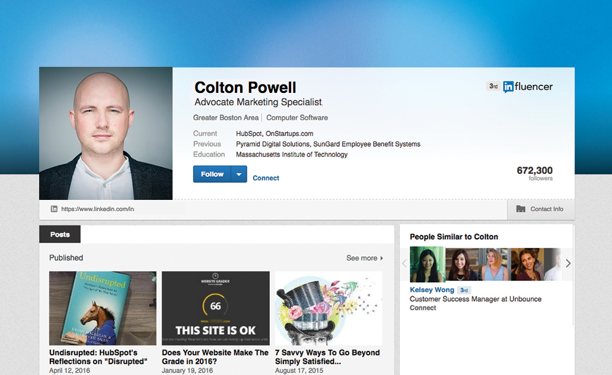

With influencer marketing the next era of digital marketing has arrived. Although some forms of influencer marketing have been practiced by advertisers for years, the modern use of this promotional strategy is clearly defined in structure and importance.
Influencer Marketing is a marketing strategy by which brands indirectly connect with their audience and convey product concepts via an opinion leader, inspirational person or topic expert.
In 2012, Nielsen reported that only about 35 percent of consumers trust online video and banner ads — yet 92 percent of consumers worldwide trust “recommendations from friends and family, above all other forms of advertising.” This is the power behind influencer marketing.
Over the past three years, the number of Google searches for the term “influencer marketing” has jumped by nearly 1500 percent. This dramatic increase is no surprise. More and more strategists are employing influencer marketing tactics because:
- it maneuvers around ad blockers
- it can be conducted online or in-person
- it involves mutual benefit
- it relies on someone else who already has a dedicated and established following
- it reaches your target audience with the highest chance of return
While many have already launched influencer marketing campaigns, it’s never too late to join the game. Fast-track your way to marketing success by carefully securing your first few influencers.
Define influencer marketing
First you must use some imagination: What does your overall influencer marketing program look like? What are the business objectives? What social media platforms will be utilized and how will each differ from one another? What does your ideal influencer look like for each of these platforms? As if you are writing a job posting, write out a list of qualifications for your potential candidates.
When considering what traits and criteria your ideal influencer would posses, ask:
- Which industry are they in?
- Where are they located?
- On which social media platforms are they active?
- What do they post about?
- How many followers do they have?
- Who are their followers?
- What is the target audience?
- Who do they follow?
- How would you collaborate in order to benefit both parties?

Identify
Once you have outlined your ideal candidates, search for them. Since most influencer campaigns are executed on social media platforms, you will likely find an influencer on Facebook, Twitter, LinkedIn, Instagram or Tumblr. Here are tools that will help your search run smoothly:
- Facebook Search will show you public posts by individuals and pages. Scan for the ones that earn the engagement you need.
- Twitter’s List feature organizes users within certain categories chosen by users. The right lists will lead you to the perfect influencers.
- Buzzsumo is an online tool that allows you to search for terms and see who is sharing that content alongside how much engagement they receive.
- Look for speeches or topics under TedTalks. Their speakers tend to build a following after their talk is posted on the site.
- Hashtag searches on Instagram will return top and recent posts. See who makes it onto the top posts.
Approach
By now you may have found a list of influencers that look promising. But, before you jump ahead and make the first move, get them to notice you first. Follow them and engage with their posts. Let them notice your brand from their own social platform. Your influencer will be more inclined to help out if they already know of your brand and they feel like they will get something out of the relationship.
Connect
When the first impression has been made, it is time to advance by making a personal connection. Send them a message, and invite them to collaborate. Explain why you believe they are the ideal influencer. Most importantly, write in detail about how working together would be mutually beneficial. No need to be aggressive, as this could turn influencers away. Take it slow, and start on a smaller project before jumping into a full campaign. Test the waters, and take the time to make sure you have found a strong match.